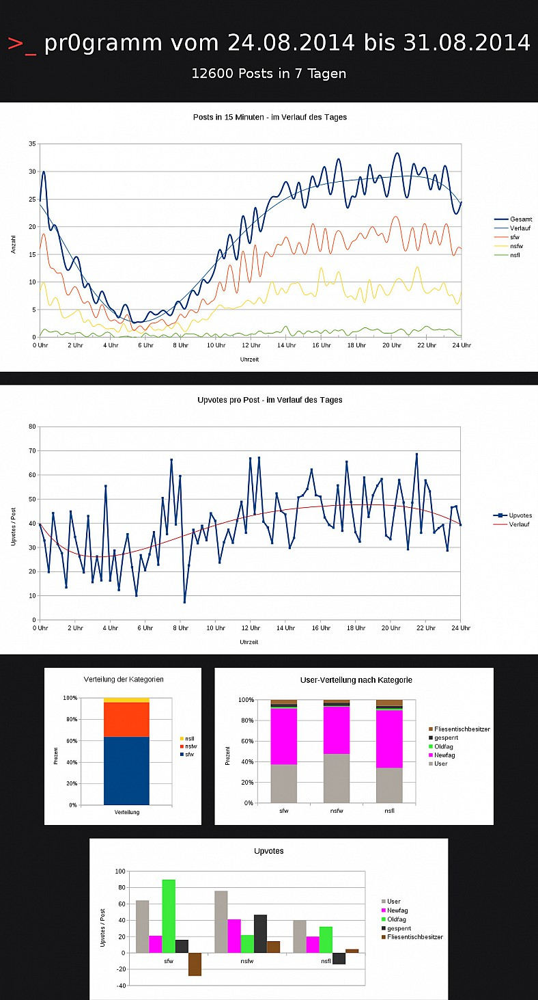

Wochenstatistik KW 35
auf pr0gramm (erstellt und gepostet von User DerpyDerp)

- Diese Statistik wurde erstellt von User DerpyDerp
- die Methodik der Datengewinnung entspricht u.U. nicht der pr0stats-Methodik, die Validität der Daten ist nicht nur pr0stats verifiziert